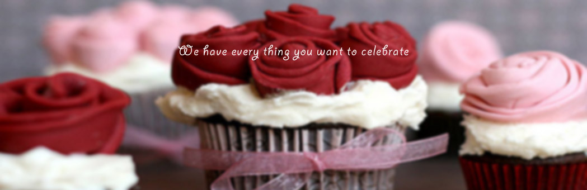
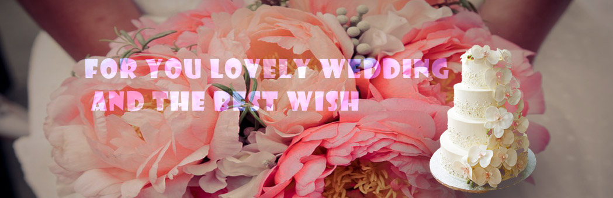
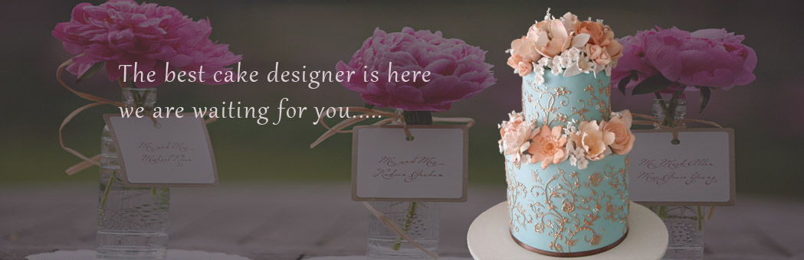
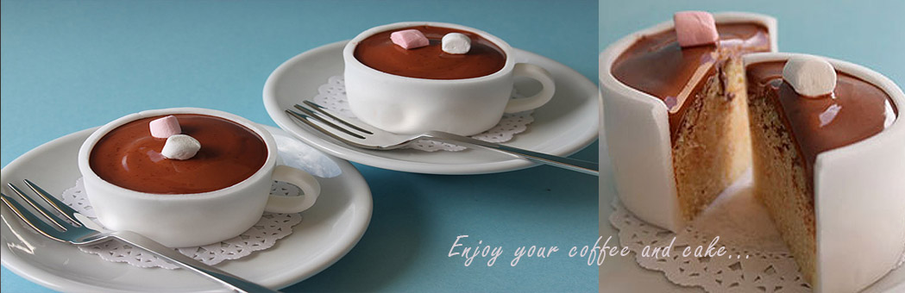

|  | ||||
|---|---|---|---|---|
|  |  |  | ||
According to the food historians, the precursors of modern cakes (round ones with icing) were first baked in Europe sometime in the mid-17th century. This is due to primarily to advances in technology (more reliable ovens, manufacture/availability of food molds) and ingredient availability (refined sugar). At that time cake hoops--round molds for shaping cakes that were placed on flat baking trays--were popular. They could be made of metal, wood or paper. Some were adjustable. Cake pans were sometimes used. The first iceing. were usually a boiled composition of the finest available sugar, egg whites and [sometimes] flavorings. This icing was poured on the cake. The cake was then returned to the oven for a while. When removed the icing cooled quickly to form a hard, glossy [ice-like] covering. Many cakes made at this time still contained dried fruits (raisins, currants, citrons).
It was not until the middle of the 19th century that cake as we know it today (made with extra refined white flour and baking powder instead of yeast) arrived on the scene. A brief history of baking powder. The Cassell's New Universal Cookery Book [London, 1894] contains a recipe for layer cake, American (p. 1031). Butter-cream frostings (using butter, cream, confectioners [powdered] sugar and flavorings) began replacing traditional boiled icings in first few decades 20th century. In France, Antonin Careme [1784-1833] is considered THE premier historic chef of the modern pastry/cake world. You will find references to him in French culinary history books. Cake recipes, Fannie Farmer's Boston Cooking School Cook Book [1918]
We have 20 years history for cake baking and designing. The love cup cake shop have a mass of fans their including the superstar, royals, singer and hundreds of custormers. We working for thire wedding, birthday party and every celebration. We holp you can join our group for the sweet life.